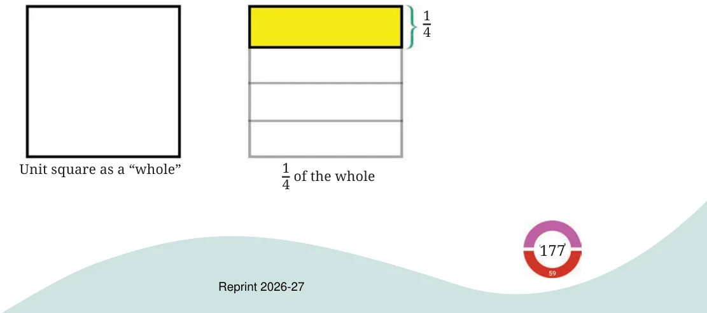
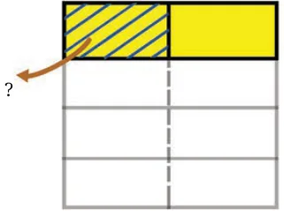
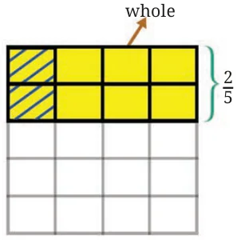
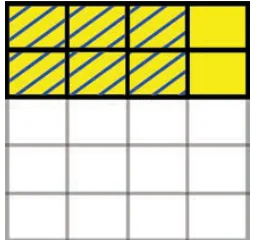

We know, that Aaron’s pet tortoise can walk only \(\frac{1}{4}\) km in 1 hour. How far can it walk in half an hour?
Following our approach of using multiplication to solve such problems, we have,
| Hour | Distance |
|---|---|
| 1 | \(\frac{1}{4}\) |
| \(\frac{1}{2}\) | ? |
Distance covered in \(\frac{1}{2}\) hour \(= \frac{1}{2} \times \frac{1}{4}\) km.
Finding the product:
Distance covered in 1 hour \(= \frac{1}{4}\) km.
Therefore, the distance covered in \(\frac{1}{2}\) an hour is the length we get by dividing \(\frac{1}{4}\) into 2 equal parts.
To find this, it is useful to represent fractions using the unit square to stand for a "whole".

Now we divide this \(\frac{1}{4}\) into 2 equal parts. What do we get? What fraction of the whole is shaded?

Since the whole is divided into 8 equal parts and one of the parts is shaded, we can say that \(\frac{1}{8}\) of the whole is shaded. So, the distance covered by the tortoise in half an hour is \(\frac{1}{8}\) km.
This tells us that \(\frac{1}{2} \times \frac{1}{4} = \frac{1}{8}\).
If the tortoise walks faster and it can cover \(\frac{2}{5}\) km in 1 hour, how far will it walk in \(\frac{3}{4}\) of an hour?
Distance covered \(= \frac{3}{4} \times \frac{2}{5}\).
Finding the product:
- First find the distance covered in \(\frac{1}{4}\) of an hour.
- Multiply the result by 3, to get the distance covered in \(\frac{3}{4}\) of an hour.
- Distance in km covered in \(\frac{1}{4}\) of an hour
\(=\) The quantity we get by dividing \(\frac{2}{5}\) into 4 equal parts.
Taking the unit square as the whole, the shaded part (in Fig. 8.1) is a region we get when we divide \(\frac{2}{5}\) into 4 equal parts. How much of the whole is it?
Fig. 8.1
The whole is divided into 5 rows and 4 columns, creating \(5 \times 4 = 20\) equal parts. Number of these parts shaded \(= 2\).
So, the distance covered in \(\frac{1}{4}\) of an hour \(= \frac{2}{20}\).
- Now, we need to multiply \(\frac{2}{20}\) by 3.

Distance covered in \(\frac{3}{4}\) of an hour \(= 3 \times \frac{2}{20}\)
\(= \frac{6}{20}\).
So, \(\frac{3}{4} \times \frac{2}{5} = \frac{6}{20} = \frac{3}{10}\).